With enhanced file encryption and privacy protection, instant upload and download speed, and the rolling out of 5G, the foundations are set to revolutionize cloud storage services. User behaviors will be dramatically changed. Cloud storage will become the new local drive.
View Desktop PrototypeDesign a product that includes the ability to create, upload, organize and share content; to save content found online; and collaborating with other users to create content together.
Conduct user research to establish a well-defined position to cut into the market. Develop a MVP that includes features the client requests for and backed up by research. Create a brand development that differs from the competitors in the market. Deliver simple and delightful user experience and design for the target audience.
I performed a thorough analysis regarding Google Drive, Box, and Dropbox regarding positioning, primary audience, differentiation and SWOT analysis.
Checkout Full Competitive Analysis
1. Develop for casual to professional users.
2. Find a medium to actively and positively expose brand image to users.
3. Offer unlimited storage at a competitive price.
4. Encrypt with the highest level of security.
5. Offer free single upload size.
6. Offer simple and delightful user experience, with overall consistency
I conducted user survey by using Google Survey to gain insight into users opinions and behavior regarding cloud storage products. The survey comprised of questions regarding preference of products, preference of functions, notable frustrations, status of subscription, also leaving text input space for what users wish can be improved.
Checkout full user survey resultsof participants have used a cloud storage before.
of participants use Google Drive due to its integration with other applications.
of participants use cloud storage for personal matters over work.
participants valued bookmarking as something important for cloud storage features.
To understand deeper into potential users’ motivations and needs, I interviewed 2 people to understand from a personal level of their experience with cloud storage applications. The following are the two personas that best represent the population pool.
I want to be able to download and upload files quickly without delay. I want to sync files on cloud and be able to work locally. I want to collaborate with peers in real time to work on projects.
I cannot utilize cloud storage freely because there are too little free space offered and I do not have the money to pay for the subscription. Many times the files are unable to sync in real time, causing lots of trouble when trying to study.
I want cloud storage to be able to to be integrated into the daily work flow. I want to upload all kinds of files freely without restrictions. I want faster upload speed.
It’s very difficult and too long to upload everything on to the cloud. Then I need to download, which is also slow and inefficient. I always get the upgrading alerts that constantly annoys me and I hope they can stop!
I created user stories to help determine and prioritize the important features to focus on users based on all the research done beforehand.
Based on the user stories, user flows are created, all of this to ensure the core process of the MVP is clear before further build up. Two flows are shown. The left is the process of sharing and the right is the process for organizing content.
As a user, I want to share an item with a friend so he can see it.
As a returning user, I want to upload a file so I can view it on another computer.
Interactions and steps between users and the product is now clear! Next is to create the “bones” for the product, or sitemap, to integrate everything together! Thanks to the user stories and flows, this is very straightforward!
Finally, I created low fidelity wireframes in Figma. The wireframes enables quick iterations on content placement, visual hierarchy and textual descriptions before design comes in!
High Fidelity Wireframes aided the exact sizing and placement of content and elements. Breaking down the steps for wireframes ensured not only efficiency but it helps to easily pick out the exact problem before maving forward.
With the wireframes underway, I was ready for my first user testing aiming to find out whether the developed layouts and flows are easy to follow. Based on the users’ feedback, I identified a list of items that could be improved to enhance the overall user experience. I invited three participants to test the wireframes, to see the results and findings, you can visit here. Changes and feedback were taken into account before moving forward.
See all findings and results
To visualize the logo, I undergone a series of brainstorming from many directions, letting the train of thought flow by itself.
Finally, I was inspired by the idea of dielines! As a unique way to represent the idea of space, storage and Realm.
By following the formal logic of dieline, the following iterations took their course and finally settling on the one used on Realm right now. I manipulated the use of turning positive space into negative space, and vise versa, and decided on the final iterations.
The Logos can be used under 3 conditions: the primary color setting, black on white, and white on black. The logo and the name can be used seperately.
The Logos can be used under 3 conditions: the primary color setting, black on white, and white on black. The logo and the name can be used seperately.

The combination of Filson Soft and Fira Sans is a couple of sensibility and security. As the type face is closely connected to the user, the friendliness should prevail in this case.


I conducted a second round of user testing with three new users using Zoom conferencing. I recruited 3 participants who have not taken my tests in Round 1. All users had a positive impression with the visual design and layout of the product. They described the experience as intuitive and easy to follow. Users were asked to take a series of tasks on the MVPs. All tasks were done with little effort. However, I had a search bar icon which users find extra to click on it for the bar to appear. Also they reported the content items look separated from the menus on the left and on the top, a spacing issue. I gladly taken these issues into account, and performed solutions shown on the bottom.

The MVP lacks the incentive for users to switch over. The huge dropout rate of Dropbox (59.1%) is from the dominance of usage and well integration into other applications of Google Drive. How would Realm compete against Google Drive?
Realm also lacks diversification. Continuing from the first point, in order to avoid direct competition with main competitors such as Google Drive, iCloud or One Drive, the product should diversify into tailoring a specific area. But this is not what the product has done. It is a general Cloud storage like any other major cloud storage.
There is also Research Biases. In the research phase, most of the participants are university students, with no to low salaries, and fall mostly under the age group of 20-30 years old. Frustrations that occur such has expensive subscription may not be a case for those that are older. Its either a research bias, or it’s the question of how has Realm served to this particular niche? There was no specific solution.
Frustrations that cannot be solved by design. Issues outside the scope relating to design. Those that concerns users the most depicted in the survey are, privacy and security (backend), pricing (marketing). Storage space (backend and marketing). I couldn’t solve these. However, what’s left are not immediate pain points by the users.
Also, the User Survey was too general. The survey remained on the superficial level of looking into user’s needs. The survey did not offer a strong compelling justification of the necessity to produce a new product. In order to further dig into user’s potential needs, subsequent surveys are needed, just like writing a paper on a thesis, it has to be specific and impactful.
class="conclusion-p" Lastly, the Business problem was too ambiguous, was not clear or unique It involved more of delivering a product upon request rather than providing a specific solution for a problem.
If I had more time, I would make the following modificaitons:
1. Instead of taking a client-agency stimulation, research a clear business problem that needs to be tackled and provide a down to earth solution.
2. Product more than one round of survey to really understand user’s frustration and pain points.
3. Find problems that can be solved through a design method.
4. Look for better ways at addressing research biases
5. Create a compelling product that the user really needs, meaning a more original idea.
It was a very challenging part. It’s very easy to be caught up with details that might not matter for the bigger picture of the design. Keeping in mind of MVP was very important..
This is my first time utilizing all the tools to undertake a project that encompass everything, including all the phases I went through. The whole process is exhilarating, and I had lots of fun. I became more competent at using the tools. I was slow at designing due to unfamiliarity. And some tools might not have to be involved in the future if its not critical enough to go through the process.
And the power of user feedback is amazing, interacting with potential users to figure out how they think.


{kind=link}
{kind=link}
{kind=link}
{kind=link}
{kind=link}
{kind=link}
{kind=link}
{kind=link}
{kind=link}
{kind=link}
{kind=link}
{kind=link}
{kind=link}
{kind=link}
{kind=link}
{kind=link}
{kind=link}
{kind=link}
{kind=link}
{kind=link}
{kind=link}
{kind=link}
{kind=link}
{kind=link}
{kind=link}
{kind=link}
{kind=link}